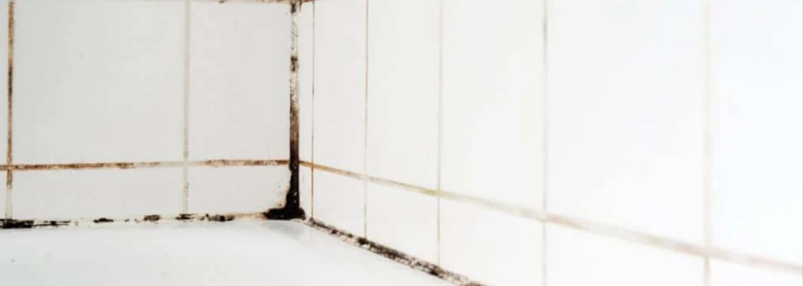

- Identifier la saleté d'abord : calcaire, graisse, moisissures ou crasse de sol
- Les joints en ciment sont poreux : acides forts et produits mal rincés les abîment
- Commencer par le plus doux, puis monter d'un cran seulement si nécessaire
- Brosse semi-dure, jamais métallique
- Rincer abondamment et laisser sécher
- Joint dégradé ou très incrusté : le nettoyage ne suffit plus
Pourquoi les joints se salissent plus vite que le carrelage
Le carrelage est lisse. Le joint, lui, est en creux et poreux : il retient l'eau, la graisse, la poussière et les dépôts de calcaire. Une saleté posée sur du carrelage s'essuie, la même saleté dans un joint s'incruste.
En Broye, où l'eau est particulièrement dure, le calcaire s'y accroche vite, surtout en salle de bain et autour de l'évier. Pour comprendre pourquoi, consultez notre guide Comment nettoyer le calcaire dans la salle de bain.
Quel type de joint avez-vous ?
| Type de joint | Caractéristiques | Ce que ça change |
|---|---|---|
| Ciment (le plus courant) | Poreux, absorbe les taches | Craint les acides forts et le manque de rinçage |
| Époxy | Plus résistant, peu poreux | Se nettoie plus facilement |
| Silicone (angles, jonctions) | Souple, étanche | Ne se traite pas comme le ciment : voir Moisissures sur joints silicone |
Identifier la saleté avant de choisir le produit
| Aspect du joint | Cause probable | Traitement de départ |
|---|---|---|
| Blanc, rugueux, voile calcaire | Calcaire | Détartrant doux adapté, temps de pose court |
| Jaunâtre, collant | Graisse (cuisine) | Savon noir ou dégraissant, brosse |
| Gris, terne | Crasse du sol | Eau chaude + savon, brosse |
| Noir, vert, taches en surface | Moisissures | Antifongique, désinfecter, sécher |
La méthode graduée, du plus doux au plus efficace
Niveau 1 : eau chaude, savon et brosse
C'est le point de départ, et ça suffit pour une crasse récente. Appliquer de l'eau chaude avec du savon noir ou du liquide vaisselle, brosser dans le sens du joint avec une brosse semi-dure, puis rincer.
Niveau 2 : le bicarbonate pour la graisse
Pour les joints jaunâtres de cuisine : étaler une pâte de bicarbonate et d'eau, laisser agir, brosser, rincer abondamment.
Niveau 3 : un détartrant doux pour le calcaire
Utiliser un détartrant du commerce adapté aux joints, avec un temps de pose court, puis rincer à l'eau claire. Tester d'abord sur une zone discrète.
Niveau 4 : un antifongique pour les moisissures
Pour les taches noires ou vertes en surface : appliquer un produit antifongique ou de l'eau de javel diluée, laisser agir le temps indiqué sur l'étiquette, rincer, puis laisser sécher complètement.
Niveau 5 : les produits professionnels
Pour un calcaire très incrusté, les professionnels utilisent des produits beaucoup plus puissants que ceux du commerce, avec un temps de pose très court et un rinçage immédiat. Mal utilisés, ils abîment les joints en quelques minutes : c'est précisément là que l'expérience compte. Pour comprendre cette différence, lisez Produits professionnels vs grand public.

La méthode pas à pas
- Aspirer ou balayer pour retirer la poussière et les débris
- Humidifier une petite zone à la fois (3 à 5 m²)
- Appliquer le produit choisi sur les joints
- Laisser poser le temps indiqué, sans jamais laisser sécher le produit
- Brosser dans le sens du joint avec une brosse semi-dure
- Rincer abondamment, à l'eau claire
- Éponger l'eau pour qu'elle ne redépose pas la saleté
- Laisser sécher et aérer
Les erreurs qui abîment les joints
- Utiliser une brosse métallique ou un grattoir dur, qui creuse le joint
- Appliquer un acide fort sur un joint en ciment
- Mélanger deux produits (gaz toxiques)
- Laisser le produit sécher sur le joint
- Oublier de rincer : un résidu attire la saleté
- Insister sur un joint déjà friable : on l'abîme encore plus
Un état des lieux approche et vos joints résistent ?
Nettoyage de fin de bail · garantie retour gratuit
Voir le service fin de bail →Empêcher le retour de la saleté
- Essuyer l'eau après la douche et passer une raclette
- Aérer la pièce chaque jour
- Nettoyer régulièrement, avant que la saleté s'incruste
- Envisager une imprégnation de protection sur des joints propres et secs, en suivant les indications du fabricant
Quand le nettoyage ne suffit plus
Un joint qui s'effrite, qui est creusé ou qui reste sombre malgré un traitement adapté a une saleté ancrée dans la matière. Le nettoyer davantage ne le sauvera pas : le rejointoiement est alors la solution.
Ce point compte pour un état des lieux, car les joints de carrelage de la cuisine et de la salle de bain font partie de ce que la régie contrôle. Pour savoir où elle regarde, lisez Ce que la régie vérifie vraiment lors d'un état des lieux.
Faire soi-même ou déléguer
| Situation | Faire soi-même | Appeler un pro |
|---|---|---|
| Crasse récente, quelques mètres de joints | ✅ Méthode graduée | Optionnel |
| Joints jaunis de cuisine | ✅ Bicarbonate et brosse | Optionnel |
| Calcaire incrusté sur une grande surface | ⚠️ Long et risqué | ✅ Recommandé |
| Moisissures étendues | ⚠️ Cause à traiter | ✅ Recommandé |
| État des lieux dans quelques jours | ⚠️ Risque de manquer de temps | ✅ Recommandé |
FAQ – Nettoyer les joints de carrelage
Quel est le meilleur produit pour des joints de carrelage noirs ?
Cela dépend de la cause. Si le noir est de la crasse, de l'eau chaude, du savon et une brosse suffisent. Si ce sont des moisissures, un produit antifongique est nécessaire, suivi d'un séchage complet. Commencez par le plus doux.
Le vinaigre blanc est-il bon pour les joints de carrelage ?
Pas sur des joints en ciment, en usage régulier. À la longue, l'acidité attaque le liant du joint. Un passage occasionnel, dilué et rincé, reste possible. Pour un calcaire installé, un détartrant adapté est plus sûr.
Les joints retrouveront-ils leur couleur d'origine ?
Pas toujours. Une saleté de surface part, mais une tache absorbée en profondeur reste parfois grisâtre. Dans ce cas, le rejointoiement est la seule solution pour retrouver un joint neuf.
Faut-il protéger les joints après le nettoyage ?
Oui, c'est utile mais optionnel. Une imprégnation posée sur des joints propres et secs limite l'absorption des taches. Suivez les indications du fabricant.
Un professionnel peut-il vraiment faire mieux ?
Oui, sur les cas incrustés. Un professionnel dispose de produits adaptés, d'un temps de pose maîtrisé et du matériel pour rincer et aspirer l'eau. Sur une saleté légère, la méthode graduée suffit.
En résumé
Pour nettoyer des joints de carrelage, il faut d'abord identifier la saleté, puis monter progressivement : savon et brosse, bicarbonate, détartrant doux, antifongique, et en dernier recours un produit professionnel. Les joints en ciment sont poreux : évitez les acides forts, les brosses métalliques et le manque de rinçage. Quand le joint est friable ou irrémédiablement taché, le nettoyage ne suffit plus.